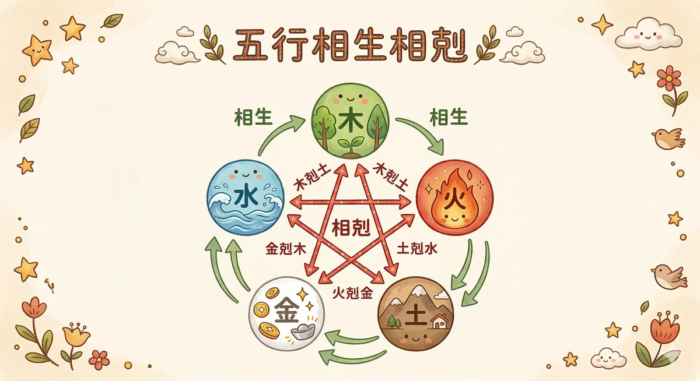
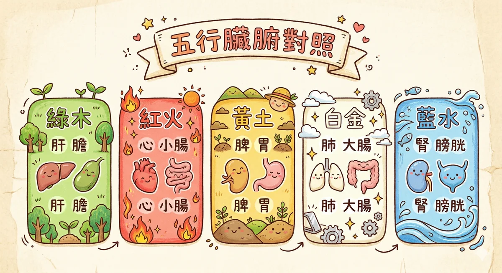

五行芳療 五行芳療 是結合中醫五行（木火土金水）與精油芳療的整合系統，將精油按照五行屬性分類，對應五臟六腑、五情五色與現代生理學機制。
馥靈之鑰的五行芳療不玄，每一個對應都有《黃帝內經》原典 + 現代內分泌學雙重論證。
五行是古代的系統思維
很多人聽到「金木水火土」就想到算命。但你把迷信的濾鏡拿掉，看看它到底在說什麼。木會生長、火會蔓延、土會承載、金會收斂、水會流動。這五種特質，剛好就是你身體裡五大功能網絡的運作模式。
現代系統生物學講的是「反饋迴路」和「動態平衡」。兩千年前的中醫用相生相剋講的是同一件事，只是語言不一樣。肝臟代謝不好，脾胃消化就跟著出問題；腎臟功能弱了，骨頭和聽力會最先反映。這些連鎖反應，不是巧合，是系統。
如果你學過經絡，你已經知道身體有 12 條高速公路。五行就是那個比經絡更高一層的分類架構，把 12 條經絡歸成 5 個部門。每個部門管一組臟腑、一種情緒、一個季節、一個方位、一種味道、一種顏色。當你知道某個部門出狀況，就能從好幾個角度同時去調整。
- 木 Wood — 肝膽系統 — 解毒、代謝、荷爾蒙調節 — 春 / 東 / 綠 / 酸 / 怒
- 火 Fire — 心與小腸系統 — 循環、意識、體溫調節 — 夏 / 南 / 紅 / 苦 / 喜
- 土 Earth — 脾胃系統 — 消化、免疫、營養吸收 — 長夏 / 中 / 黃 / 甜 / 思
- 金 Metal — 肺與大腸系統 — 呼吸、皮膚屏障、黏膜免疫 — 秋 / 西 / 白 / 辛 / 悲
- 水 Water — 腎與膀胱系統 — 內分泌、水分平衡、骨髓、生殖 — 冬 / 北 / 黑 / 鹹 / 恐
科學怎麼看五行
2019 年《Frontiers in Physiology》一篇系統性回顧指出，五行理論中的臟腑互動模式，與現代系統生物學的器官串擾（organ crosstalk）概念高度吻合。肝腎軸（hepatorenal axis）、腸腦軸（gut-brain axis）、腸皮軸（gut-skin axis）、心腎交互作用（cardiorenal syndrome）這些近二十年才被命名的醫學概念，中醫在兩千年前就用「相生相剋」描述過了。
五行不是在預言未來，它是一套描述身體內部動態平衡的語言系統。現代科學在做的事，是用精密儀器驗證這套語言哪些地方說對了，哪些地方需要修正。
互動式五行循環圖
點擊五個元素的熱點，看看每一行在你身體裡負責什麼。這張圖不只是一個靜態對照表，它是一個活的系統。每個點之間都有連線，代表它們之間的促進或制約關係。

點擊圖上的五行元素
每個元素都對應一組臟腑、一種情緒、一個季節。點擊任何一個看詳細說明。
五行個論

點開每張卡片，看看那個系統在你身體裡怎麼運作。平衡的時候是什麼狀態，失衡的時候身體會發出哪些訊號。每一行都附了日常建議和一個你今天就能做的小事。
木 Wood
現代生理學怎麼說
肝臟負責兩階段解毒（Phase I 氧化、Phase II 結合），製造膽汁幫助脂肪消化，儲存肝醣調節血糖，代謝雌激素維持荷爾蒙平衡。膽囊則是膽汁的倉庫，吃飯時釋放出來乳化脂肪。這整套系統管的是「疏通」，毒素要通、膽汁要通、情緒也要通。肝臟還有超過 500 種已知功能，是人體最大的內臟器官，重約 1.5 公斤。
為什麼跟「怒」有關
中醫說「怒傷肝」，現代研究發現慢性憤怒會刺激交感神經持續亢奮，導致肝臟血流量改變、解毒效率下降。2016 年《Journal of Hepatology》的研究顯示，長期壓力會促進肝臟發炎因子 IL-6 分泌。反過來，肝功能不好的人也特別容易暴躁，不是脾氣差，是身體在求救。
平衡的感覺
- 做決定乾脆俐落，不拖泥帶水
- 有創意、有彈性，遇到變化能轉彎
- 眼睛明亮、視力穩定
- 筋骨柔軟、活動自如
- 月經規律、經前不會特別不舒服
失衡的訊號
- 容易發怒、煩躁、情緒壓不住
- 眼睛乾澀、偏頭痛、視力模糊
- 筋骨僵硬、容易抽筋
- 經前症候群（PMS）、月經不順
- 兩側太陽穴脹痛
- 指甲脆弱、容易斷裂
對應精油（一行帶過）
佛手柑疏肝理氣、羅馬洋甘菊平肝降火、檸檬利膽清爽，都是木行的好夥伴。
今天就能做的小事
晚上 11 點到凌晨 3 點是肝膽經的時辰，這段時間必須躺平。不是滑手機的那種躺，是真的睡。白天可以做伸展操，側彎拉伸身體兩側的膽經路線。酸的食物適量吃，烏梅、檸檬水都行，但胃酸多的人別空腹喝。春天特別要注意疏肝，因為木行跟春季對應，這個季節肝氣最旺，也最容易出問題。
火 Fire
現代生理學怎麼說
心臟每天跳動約 10 萬次，泵出 7,500 公升的血液。心輸出量（cardiac output）決定全身的氧氣和養分供應。中醫說「心主神明」，現代神經心臟學（neurocardiology）發現心臟有自己的神經網絡，約 4 萬個神經元，能獨立處理資訊並回傳大腦。小腸則是營養吸收的主戰場，全長約 6 公尺，表面積展開有一個網球場那麼大。火行還包含心包經和三焦經，管的是身體的保護層和水液通道。
為什麼跟「喜」有關
適度的喜悅讓心臟節律穩定，心率變異度（HRV）提高。但過度興奮、大喜大悲同樣傷心，不是成語，是真的。臨床上「壓力型心肌病變」（Takotsubo cardiomyopathy）就是極端情緒造成的心臟暫時性衰竭，又叫「心碎症候群」。所以古人說「喜傷心」，不是反對開心，是提醒你別太嗨。
平衡的感覺
- 發自內心的快樂，不是假裝的
- 表達流暢、溝通有溫度
- 思路清晰、專注力好
- 臉色紅潤、手腳溫暖
- 睡眠品質好，一夜安穩
失衡的訊號
- 焦慮、心悸、失眠
- 心神不寧，坐立不安
- 口腔潰瘍反覆發作
- 手心發熱或異常冰冷
- 過度亢奮，停不下來
- 舌尖紅、口乾舌燥
對應精油（一行帶過）
依蘭降心火、薰衣草安神助眠、玫瑰開心竅，三支都是火行的經典搭配。
今天就能做的小事
中午 11 點到 1 點是心經時辰，這時候小睡 15 到 20 分鐘效果最好。苦味食物適量攝取，苦瓜、黑巧克力（70% 以上）、蓮子心泡茶。最簡單的方法：今天對一個人真誠地笑一次，不帶目的的那種。夏天特別注意不要讓自己過度亢奮，火行跟夏季對應，夏天心臟負擔本來就比較大。
土 Earth
現代生理學怎麼說
消化系統分泌超過 20 種消化酶，腸道菌群約 100 兆個微生物，腸道黏膜上駐守了人體約 70% 的免疫細胞（GALT，腸道相關淋巴組織）。胃每天分泌約 2 公升胃酸（pH 1.5-3.5），強到可以溶解鐵釘。所以「脾胃是後天之本」不是虛的，你吃進去的東西能不能變成養分，你的免疫力夠不夠強，全看這套系統的狀態。
為什麼跟「思」有關
想太多的時候食慾會怎樣？不是暴食就是完全不想吃。壓力會改變腸道蠕動速度、減少消化酶分泌、破壞菌群平衡。腸腦軸（gut-brain axis）的研究已經證實：腸道和大腦是雙向通訊的，腸道製造了全身 95% 的血清素（serotonin）。你的胃在「第二個大腦」不是比喻，是科學。
平衡的感覺
- 消化順暢、吃什麼都能吸收
- 肌肉有力、體態穩定
- 腳踏實地、有安全感
- 照顧別人不會掏空自己
- 嘴唇紅潤、味覺靈敏
失衡的訊號
- 想太多、反覆糾結、鑽牛角尖
- 脹氣、消化不良、軟便或便秘交替
- 容易疲倦、四肢無力
- 嗜甜、特別想吃甜食
- 肌肉鬆弛、代謝變慢
- 嘴唇乾裂、口腔潰瘍
對應精油（一行帶過）
甜橙健脾開胃、薑溫胃散寒、檸檬草化濕消脹，三支精油各有各的溫暖。
今天就能做的小事
早上 7 到 9 點是胃經時辰，這時候吃一頓溫熱的早餐最重要。不要空腹灌冰飲。吃飯的時候放下手機，每口嚼 20 下。聽起來很無聊，但你的胃會非常感謝你。換季時期特別注意保暖腹部，一條薄圍巾圍在肚子上就有差。土行對應「長夏」，就是每個季節交接的 18 天，這段時間脾胃最敏感。
金 Metal
現代生理學怎麼說
肺臟的氣體交換面積約 70 平方公尺，每天處理約 11,000 公升的空氣。肺泡約有 3 億個，壁薄到只有 0.2 微米。皮膚是人體最大的器官（約 1.7 平方公尺），兼具屏障、感覺、體溫調節和免疫功能。腸皮軸（gut-skin axis）的研究發現，大腸的菌群平衡會直接影響皮膚狀態，便秘的人容易長痘痘，不是錯覺，是腸道菌群失衡導致全身性發炎。
為什麼跟「悲」有關
你有沒有注意過，傷心的時候呼吸會變淺、胸口會悶？「悲傷肺」不只是中醫理論，心理神經免疫學（PNI）的研究顯示，長期壓抑悲傷會降低呼吸道的免疫球蛋白 A（sIgA），讓你更容易感冒。2018 年一項追蹤研究發現，喪偶後六個月內呼吸道感染風險增加 40%。所以哭不是軟弱，是肺在做自我調節。
平衡的感覺
- 皮膚光滑、毛孔細緻
- 免疫力穩定，不容易感冒
- 懂得放手、有清晰的界線
- 排便規律、腸道乾淨
- 呼吸深長均勻
失衡的訊號
- 容易感傷、放不下過去的事
- 皮膚問題反覆（過敏、濕疹、乾燥）
- 便秘或腸躁，排便不順
- 容易感冒、鼻子過敏
- 很難跟人或事物告別
- 呼吸淺短、容易嘆氣
對應精油（一行帶過）
尤加利宣肺通竅、茶樹清肺抗菌、乳香斂肺安神，秋天的三個守護者。
今天就能做的小事
凌晨 3 到 5 點是肺經時辰，這個時間點容易醒來的人要特別注意肺系統。白天做 3 分鐘的深呼吸練習：吸氣 4 秒、屏氣 4 秒、呼氣 6 秒。秋天多吃白色食物，水梨、百合、白木耳、山藥。還有一件事：如果你需要哭，就哭。哭完的那口深呼吸，才是真正的肺在展開。
水 Water
現代生理學怎麼說
腎臟每天過濾約 180 公升的血液，回收 99% 的水分和電解質，最後只排出約 1.5 公升尿液。腎上腺坐在腎臟上方，分泌皮質醇（壓力荷爾蒙）和腎上腺素（戰逃反應）。性腺荷爾蒙（睪固酮、雌激素）的原料也跟腎上腺有關。骨髓製造血球、骨質代謝需要維生素 D 活化，而維生素 D 的活化就發生在腎臟。中醫說「腎主骨生髓」，「腎藏精」，精是生命的根本物質，用現代語言來說就是幹細胞、荷爾蒙、遺傳物質的總稱。
為什麼跟「恐」有關
恐懼觸發腎上腺釋放皮質醇和腎上腺素，這就是你嚇到的時候雙腿發軟、甚至失禁的原因。長期恐懼（慢性壓力）會耗竭腎上腺功能，導致慢性疲勞、性慾低下、骨質流失。HPA 軸（下視丘-腦垂體-腎上腺軸）的過度活化，是現代人最常見的內分泌失調之一。「嚇到腿軟」不是形容詞，是腎上腺在超載運作。
平衡的感覺
- 有勇氣面對未知
- 意志力穩定，能堅持
- 骨骼強壯、聽力清晰
- 精力充沛、性功能正常
- 頭髮黑亮有光澤
失衡的訊號
- 莫名恐懼、容易被嚇到
- 腰痠背痛、膝蓋無力
- 耳鳴、聽力下降
- 掉髮、白髮提早出現
- 性慾低落、生殖功能減退
- 夜尿頻繁、下肢水腫
對應精油（一行帶過）
雪松補腎固本、檀香固腎安神、杜松利水排毒，冬天養腎的三個好朋友。
今天就能做的小事
下午 5 到 7 點是腎經時辰，這段時間適合休息而不是繼續衝。冬天多吃黑色食物，黑芝麻、黑豆、黑木耳、海帶。每天睡前用溫水泡腳 15 分鐘，水溫 40 度左右就好，不要太燙。腳底的湧泉穴是腎經的起點，泡完按一按，睡眠品質會明顯不同。另外，冬天少熬夜，早睡是最好的補腎方式，因為腎主「藏」，冬天就是要收藏。
相生相剋科學解析
這兩個循環是整套五行系統的核心邏輯。相生是促進，相剋是制約。兩個同時運作，身體才不會亂。你可以想像一家公司：相生是部門之間的資源傳遞，相剋是部門之間的互相監督。缺了任何一邊，系統就會崩潰。
相生循環（母子關係）
上一個系統的輸出，是下一個系統的養分。如果某一行虛弱，去補它的「母親」往往比直接補它更有效。中醫叫「虛則補其母」。
- 木 → 火：肝臟儲存的肝醣和營養，是心臟泵血的燃料。肝血充足，心才有東西可以推動
- 火 → 土：心臟的血液循環提供脾胃消化所需的溫度和動力。心火不足，脾胃就會寒，消化力下降
- 土 → 金：脾胃吸收的營養，是肺臟和免疫系統的原料。營養不良的人，呼吸道免疫力一定差
- 金 → 水：肺臟吸入的氧氣和調節的水液，滋養腎臟功能。呼吸深的人，腎臟的含氧量比較好
- 水 → 木：腎臟提供的水分和荷爾蒙，讓肝臟能順利代謝。腎水不足，肝就容易上火
相剋循環（制約關係）
防止任何一行過度亢進。如果某一行太強，去強化它的「剋星」可以幫助恢復平衡。中醫叫「實則瀉其子」。
- 木 → 土：肝氣太旺會壓制脾胃。生氣吃不下飯，就是這個機制。壓力大的人胃腸出問題，幾乎是標配
- 土 → 水：脾的運化功能控制體內水分代謝，防止水腫。脾虛的人容易水腫，不是喝太多水，是脾管不住水
- 水 → 火：腎水制約心火，讓你不會太亢奮。失眠常常是水不制火，腎陰不足導致心火上浮
- 火 → 金：心火過旺會消耗肺氣。發高燒的時候呼吸急促、咳嗽，就是火剋金的表現
- 金 → 木：肺氣的收斂功能約束肝氣不要亂衝。深呼吸能平息怒氣，就是金剋木在起作用
五行的平衡與失衡
五行理論最核心的概念不是「你是什麼型」，而是「動態平衡」。沒有人天生五行完美平衡，那不現實。重點是你能不能覺察到哪裡失衡了，然後做一點小事讓它往回調。
三種失衡模式
某一行太強（亢進）：壓力大的時候肝氣暴衝（木亢），結果壓制脾胃（木剋土）。你會發現自己同時煩躁、胃痛、吃不下。表面上是三個問題，根源只有一個。
某一行太弱（虛損）：長期熬夜消耗腎精（水虛），腎水不足就制約不了心火（水不制火），結果失眠、焦慮、心悸全來了。補腎比安眠藥有效。
相生斷鏈：母行虛弱無法滋養子行。脾胃差（土虛）導致肺氣不足（土不生金），容易感冒、皮膚差。這時候補肺效果有限，要先顧脾胃。
所以五行不是一個靜態的分類系統。它更像一個天氣圖，每天都在變化。今天壓力大，木行可能偏亢；明天受了風寒，金行可能偏虛。你需要的不是一次性的診斷，而是持續的覺察能力。
五行體質速測（15題）
不是正式的中醫體質辨識，是一個快速的自我掃描。15 道題，每題選最符合你最近一個月狀態的選項。做完會告訴你五行比例和調理方向。大概 3 分鐘。
五行完整對照表
不想看長文的時候，這張表就夠了。存起來當速查卡用。
| 項目 | 木 | 火 | 土 | 金 | 水 |
|---|---|---|---|---|---|
| 臟 / 腑 | 肝 / 膽 | 心 / 小腸 | 脾 / 胃 | 肺 / 大腸 | 腎 / 膀胱 |
| 季節 | 春 | 夏 | 長夏（換季） | 秋 | 冬 |
| 方位 | 東 | 南 | 中 | 西 | 北 |
| 情緒 | 怒 | 喜 | 思 | 悲 | 恐 |
| 味覺 | 酸 | 苦 | 甜 | 辛 | 鹹 |
| 感官 | 目（眼） | 舌 | 口（味） | 鼻 | 耳 |
| 體表 | 筋 | 血脈 | 肌肉 | 皮毛 | 骨髓 |
| 顏色 | 綠 | 紅 | 黃 | 白 | 黑 / 深藍 |
| 精油 | 佛手柑、洋甘菊、檸檬 | 依蘭、薰衣草、玫瑰 | 甜橙、薑、檸檬草 | 尤加利、茶樹、乳香 | 雪松、檀香、杜松 |
| 推薦食物 | 烏梅、醋、綠色蔬菜 | 苦瓜、蓮子、黑巧克力 | 南瓜、地瓜、小米 | 水梨、百合、白木耳 | 黑芝麻、黑豆、海帶 |
| 經絡時辰 | 肝 1-3am / 膽 11pm-1am | 心 11am-1pm / 小腸 1-3pm | 脾 9-11am / 胃 7-9am | 肺 3-5am / 大腸 5-7am | 腎 5-7pm / 膀胱 3-5pm |
| 日常建議 | 11pm 前入睡、伸展拉筋 | 午休小睡、適量苦味 | 溫熱早餐、細嚼慢嚥 | 深呼吸、秋食白色 | 泡腳、冬食黑色 |
五行飲食速查
中醫說「藥食同源」。五味對應五臟，吃對了是養生，吃過頭就是傷身。這張速查表不是要你每天照著吃，而是當你覺得某個系統卡卡的時候，知道可以從飲食開始微調。
木（肝）需要酸
檸檬水、醋、梅子、奇異果。春天養肝的好夥伴。酸味入肝，幫助疏泄，就像幫肝臟做伸展操。
但太酸傷脾。吃完酸的東西胃不舒服，代表脾胃在抗議，該收一點了。
火（心）需要苦
苦瓜、黑巧克力、蓮子心、綠茶。夏天清心火的基本配備。苦味能降火，就像身體裡的天然冷氣。
但太苦傷骨。長期吃大量苦味食物會讓骨骼密度受影響，適量就好。
土（脾）需要甜
天然甘味：地瓜、南瓜、紅棗、山藥。這裡說的「甜」不是白砂糖和蛋糕，是食物本身的甘味。
但太甜傷肉。甜食吃太多肌肉會變鬆弛無力，中醫叫「甘多傷肉」，很精準。
金（肺）需要辛
蔥、薑、蒜、白蘿蔔、洋蔥。秋天潤肺的好朋友。辛味能發散，幫助氣的流通，像是幫肺打開窗戶通風。
但太辛傷皮毛。辣吃太多皮膚容易乾、頭髮容易毛躁。
水（腎）需要鹹
海帶、紫菜、黑豆、黑芝麻。冬天補腎的天然食材。鹹味入腎，黑色食物補腎，兩個加在一起效果更好。
但太鹹傷血。高鹽飲食對心血管的影響，現代醫學和中醫說的是同一件事。
台灣人的五行常見問題
台灣的氣候、飲食習慣和生活壓力，造就了一些很有特色的五行失衡模式。做了 34 年的美業，看了數不清的客人，這三種組合出現的頻率最高。你可以對號入座看看。
台灣工時全球前幾名，加班文化根深蒂固。壓力長期累積，肝氣就會越來越旺。肝火一上來，脾氣暴躁、肩頸僵硬、眼睛乾澀、偏頭痛，全部一起來。女性還會加上經前症候群加重、月經不規律。
木旺的連鎖反應特別明顯：肝氣衝上來壓制脾胃（木剋土），所以壓力大的人幾乎都有腸胃問題。胃食道逆流、功能性消化不良、腸躁症，在台灣的盛行率高到嚇人。不是胃出了什麼大問題，是肝在搗亂。
常見於：科技業工程師、金融業、自營業者、全職媽媽、美業從業者（沒錯，我們自己也是高危群）
調理方向：疏肝為先，不是吃胃藥。11 點前睡覺、做伸展操、酸味食物適量攝取。情緒的出口比什麼保健食品都重要。佛手柑精油在辦公桌上薰一下，或是洋甘菊泡個茶，讓身體知道可以鬆一點了。
台灣是亞熱帶海島，年平均濕度 75% 以上，夏天更是動不動就 85%。外濕引內濕，脾胃最怕濕。再加上台灣人的飲食習慣：早餐冰奶茶、中午外食油膩、晚上手搖飲加珍珠、宵夜鹹酥雞。這套組合打下來，脾胃不虛才奇怪。
土虛的典型表現：疲倦感怎麼睡都睡不飽、身體沉重像裹了一層濕毛巾、舌頭上有厚厚的白苔、大便不成形要擦很多次、下午特別想睡、嗜甜嗜油。很多人以為是「體質就這樣」，其實是脾胃長期被濕氣泡著，運化功能下降了。
常見於：久坐上班族、手搖飲重度愛好者、外食族、南部（濕熱更重）
調理方向：祛濕健脾是重點。減少冰飲和甜食（知道很難，慢慢來）。薏仁水、四神湯是台灣人最容易取得的祛濕食物。早餐換成溫熱的，哪怕只是一碗熱粥。檸檬草精油聞起來清爽，對化濕特別好。運動出汗也是排濕的好方法，不需要很激烈，快走 30 分鐘就夠了。
台灣的生活步調快、工作壓力大、普遍晚睡，這三件事加在一起就是在消耗腎精。腎上腺長期被壓力轟炸，皮質醇分泌過度到後來分泌不足（腎上腺疲勞），整個人像電池永遠充不飽。年輕人掉髮、30 歲開始腰痠、冬天手腳冰冷到懷疑血液循環有問題，這些越來越常見。
水虛還有一個台灣特色：冷氣吹太多。辦公室、百貨公司、捷運，從五月吹到十月，身體的寒氣一直往裡面走。外面是 36 度，進到辦公室變 24 度，溫差 12 度的衝擊，腎陽就是這樣一點一點被消耗掉的。
常見於：長期熬夜族、更年期前後女性、冷氣房久待者、體質偏寒的人
調理方向：養腎不是吃藥，是改變生活方式。早睡是最便宜的補腎藥。冬天泡腳、多吃黑色食物。辦公室放一件薄外套，護住腰部和後頸（督脈經過的地方）。雪松精油塗在腳底湧泉穴，泡腳的時候滴兩滴在水裡，暖暖的。
五行與美業的應用
這一段是寫給美業人的，但一般讀者看了也會有收穫。五行不只是養生理論，它在美容護膚、美甲配色、飲食與肌膚的關係上，都有非常實用的應用。
五行體質 × 美容護膚方向
木型體質的肌膚
肝主疏泄，肝氣不順的人皮膚容易暗沉、長斑、T 字部位出油但兩頰乾燥（混合肌的典型成因之一）。經前冒痘也是肝火上衝的表現。
護膚方向：重點在疏通，而不是猛補。清潔不要過度，但要確實。選擇含佛手柑、薰衣草成分的保養品，幫助肌膚代謝。內調比外用更重要，11 點前睡覺對皮膚的效果比任何精華液都好。
火型體質的肌膚
心火旺的人臉色容易潮紅、微血管擴張、酒糟肌的比例偏高。皮膚摸起來溫度比別人高，容易泛紅敏感。
護膚方向：重點在鎮靜和降溫。避開太刺激的成分（酸類、酒精），選擇含玫瑰、洋甘菊的舒緩型產品。內調上減少辛辣食物和咖啡因。臉部按摩手法要輕柔，不要大力搓揉。
土型體質的肌膚
脾虛濕重的人皮膚容易浮腫、鬆弛、毛孔粗大、嘴唇周圍容易長痘（脾經路線）。膚色偏黃暗沉，不是老化，是代謝不好。
護膚方向：重點在排濕和緊緻。引流按摩對這類膚質效果最好。飲食上減甜減油，薏仁水是內外兼修的好東西。外用含薑或柑橘類精油的產品可以幫助循環。
金型體質的肌膚
肺主皮毛，金行虛弱的人皮膚最敏感。乾燥、脫皮、容易過敏、換季就出問題。毛孔細但屏障功能弱，動不動就泛紅刺痛。
護膚方向：重點在修復屏障和保濕。簡化保養步驟，不要疊太多層。含乳香、金盞花的產品對屏障修復特別好。內調上多吃白色食物（銀耳、百合、山藥），同時注意呼吸深度。
水型體質的肌膚
腎主骨華在髮，水行虛弱的人最先反映在頭髮和骨骼。掉髮、白髮、皮膚鬆弛缺乏彈性、黑眼圈深、法令紋提早出現。看起來比實際年齡老。
護膚方向：重點在滋養和抗氧化。選擇含膠原蛋白促進成分的產品。內調上黑色食物是王道（黑芝麻、黑豆、何首烏）。泡腳可以促進全身循環，對膚質改善的效果比敷面膜持久。
五行配色在美甲的應用
這不是什麼神祕學，是色彩心理學和五行系統的交集。當客人不知道要做什麼顏色的時候，根據她最近的身體狀態推薦五行配色，她會覺得你懂她。
木行配色：綠色系
橄欖綠、森林綠、薄荷綠、苔蘚綠。適合壓力大需要放鬆的客人。綠色在色彩心理學裡代表舒緩和重生。春天做特別應景。搭配木紋、樹葉、藤蔓圖騰都很合。
火行配色：紅色系
正紅、珊瑚紅、玫瑰粉、酒紅。適合需要自信和能量的客人。紅色提升存在感，面試、約會、重要場合的首選。夏天做最亮眼。搭配愛心、火焰、太陽圖騰。
土行配色：黃色 / 大地色系
奶茶色、駝色、芥末黃、南瓜色。適合需要穩定感和安全感的客人。大地色系百搭不挑膚色，適合每一天。搭配幾何圖形、大理石紋、金箔點綴。
金行配色：白色 / 金屬色系
珍珠白、銀色、香檳金、裸色。適合需要清理和放下的客人。金屬色系自帶高級感，秋冬做特別有質感。搭配線條、月亮、極簡幾何。
水行配色：藍色 / 深色系
深藍、墨藍、紫黑、星空色。適合需要沉澱和內省的客人。深色系低調有力量，冬天做最有氛圍。搭配水波紋、星空、漸層暈染。
五行飲食 × 肌膚的關係
你吃進去的東西，兩個禮拜後會反映在你的皮膚上。這不是感覺，是皮膚的新陳代謝週期（表皮層約 28 天）。很多客人花大錢做臉、買保養品，但飲食不改，效果永遠有限。
| 吃太多什麼 | 傷哪裡 | 皮膚會怎樣 | 怎麼調 |
|---|---|---|---|
| 甜食（土過盛） | 脾，連帶傷肉 | 毛孔粗大、鬆弛、暗沉 | 減糖，薏仁水替代手搖飲 |
| 辛辣（金過盛） | 肺，連帶傷皮毛 | 乾燥脫皮、泛紅敏感 | 減辣，白色食物潤肺 |
| 鹹食（水過盛） | 腎，連帶傷血 | 浮腫、黑眼圈加深 | 減鹽，多喝水沖淡 |
| 酸食（木過盛） | 肝，連帶傷筋 | 指甲脆弱、眼周皺紋 | 適量就好，配合甘味 |
| 苦食（火過盛） | 心，連帶傷骨 | 氣色蒼白、乾燥無光 | 適量就好，配合鹹味 |
五行 × 你的工作風格
每個人天生帶著不同的五行比例，反映在工作上就是你的優勢和盲區。知道自己是哪一型，不是要貼標籤，而是知道什麼時候該踩油門、什麼時候該找人幫忙。
木型人：創意先鋒
點子多、衝勁強、喜歡挑戰新事物。開會的時候通常是最先舉手的那個人。但容易焦躁，一件事還沒做完就想跳到下一件。
適合：創業、設計、行銷、專案啟動
需要：一個土型夥伴幫你穩住節奏，不然你會像一棵長太快的樹，根還沒紮穩就被風吹倒。
火型人：天生領袖
熱情、有感染力、領導力強。走進會議室，氣場自動開最大。但容易過度興奮，有時候會把團隊燒到受不了。
適合：公關、銷售、表演、團隊帶領
需要：一個水型夥伴在旁邊冷靜地說「我們先想清楚再衝」。火遇水不是熄滅，是變成蒸汽，力量更大。
土型人：穩定核心
可靠、有耐心、做事紮實。團隊裡大家最信任的那一個。但容易想太多，還沒開始就先擔心失敗。
適合：管理、教育、財務、人資、營運
需要：一個木型夥伴推你一把。土如果沒有木來鬆動，會越來越硬、越來越動不了。
金型人：品質守門
精準、有原則、對細節要求很高。交出來的東西永遠是最乾淨的版本。但容易太嚴格，讓周圍的人壓力很大。
適合：法律、工程、品管、編輯、審計
需要：一個火型夥伴帶來溫度。金太冷的時候，團隊會覺得你不近人情，其實你只是標準高。
水型人：幕後智囊
聰明、觀察力強、靈活變通。總是能看到別人沒看到的角度。但容易恐懼，面對不確定性的時候會一直退縮。
適合：研究、諮詢、藝術、策略規劃
需要：一個土型夥伴給你安全感。水沒有容器就四處流散，土就是那個容器，讓你的聰明有地方落地。